Pull request prośba o zaakceptowanie zmian gdy tworzymy wspólny projekt i nie mamy praw do mergowania gałęzi z masterem; umożliwia także poinformowanie osób zaangażowanych w projekt o zmianach, a także omówienie tych zmian dzięki komentarzom, dzięki czemu można zdecydować, które zmiany przyjąć, a które odrzucić.
Tworzenie i obsługa gałęzi
- tworzymy nową gałąź i na nią przechodzimy
git branch featuregit checkout feature
- tworyzmy nowy plik
echo >> dodatkowy_plik.txt
- dodajemy plik do kolejki
git add .
- tworzymy commit
git commit -m "dodanie nowego pliku o nazwie dodatkowy_plik.txt"
- wgrywamy lokalne repozytorium na serwer (do odpowiedniej gałęzi)
git push origin feature
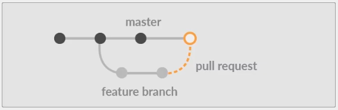
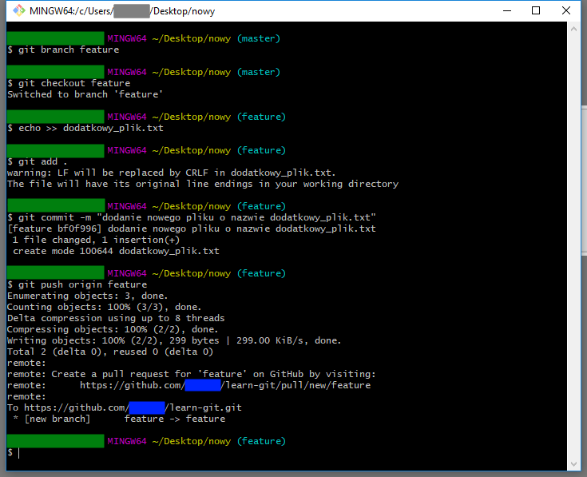
Tworzenie pull request
- wybór nowego branch-a
- stworzenie nowego pull request
- wybór gałęzi, do której dedykowane są zmiany oraz opis czego dotyczy pull request
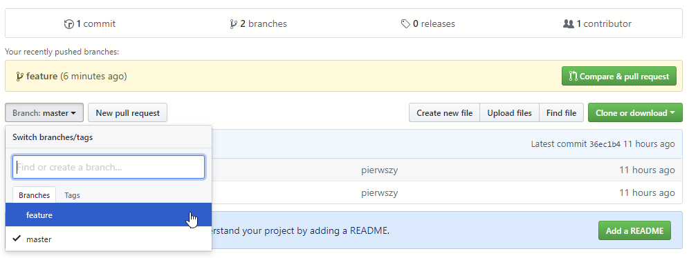
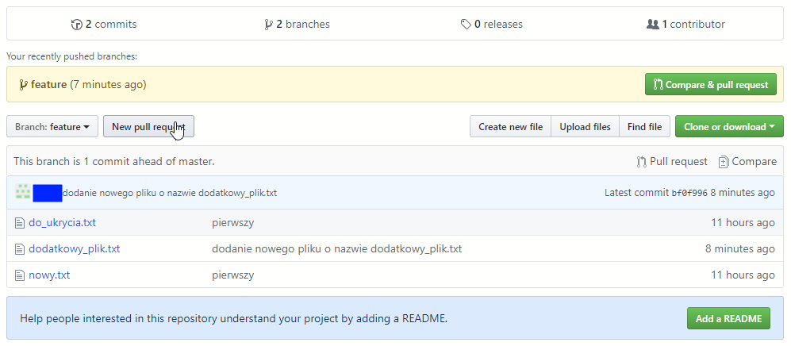
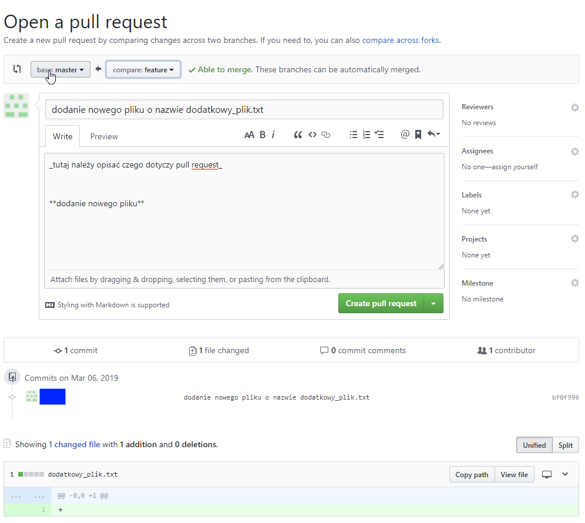
Konwersacja
- dodawanie komentarzy do poszczególnych linii kodu
- konwersacja dotycząca określonej gałęzi
- jeśli posiadamy uprawnienia możemy zmergować gałąź
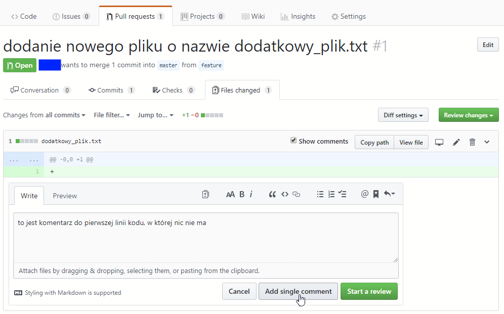
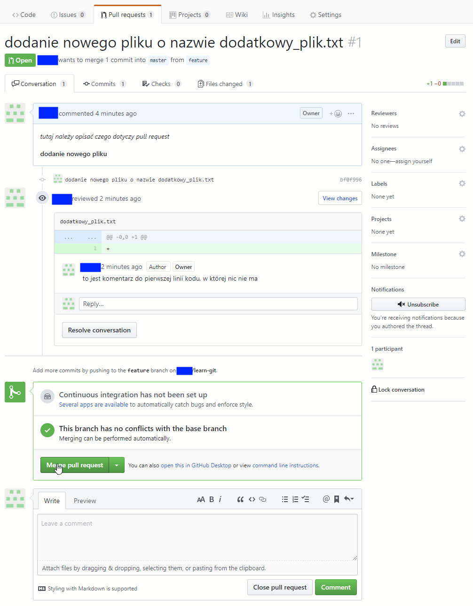
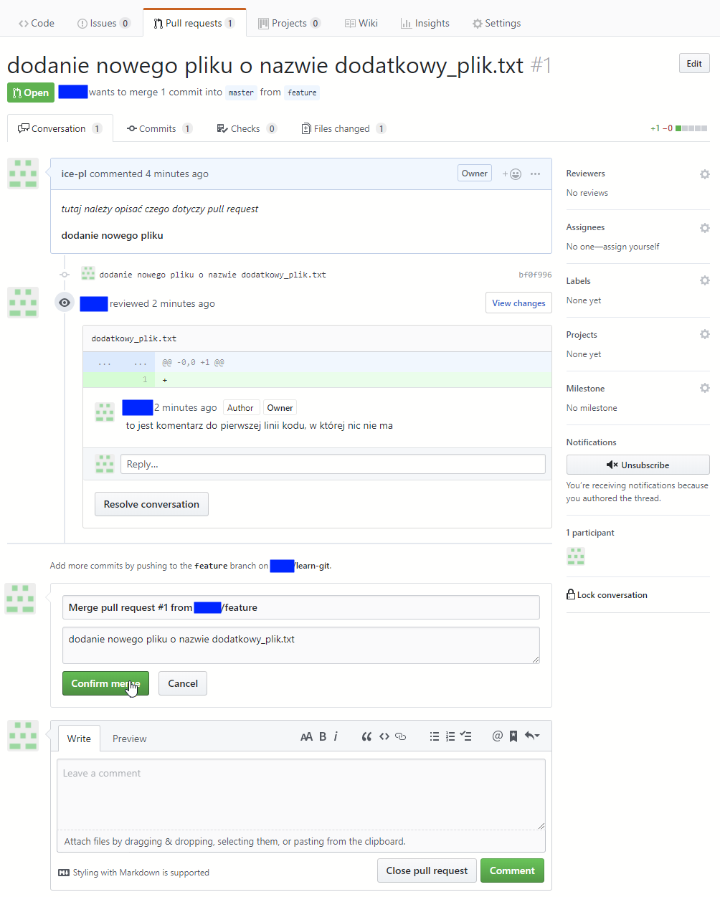
Usuwanie i przywracanie gałęzi
- usuwanie gałęzi
- możliwość przywrócenia gałęzi
- widok gałęzi po wszystkich operacjach
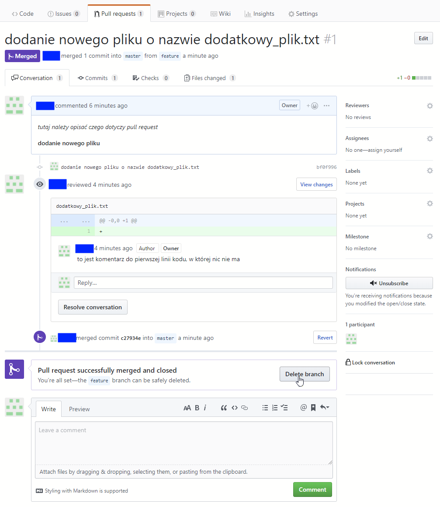
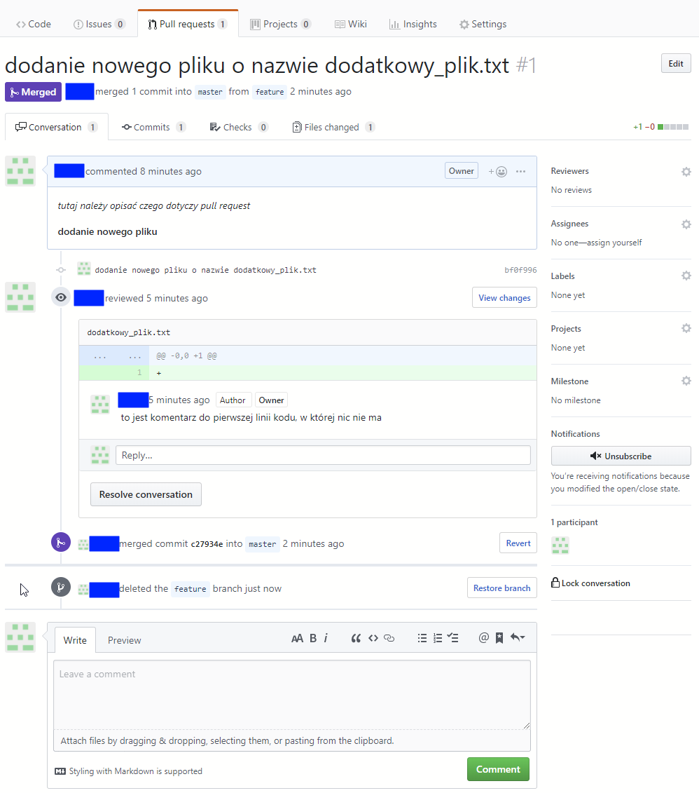
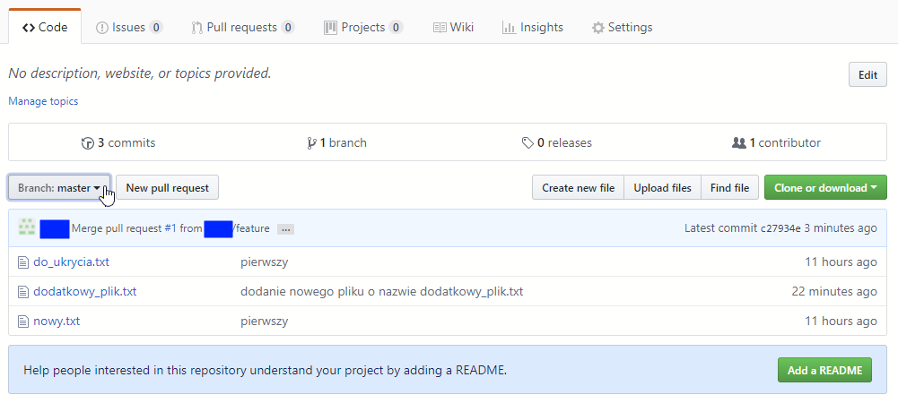
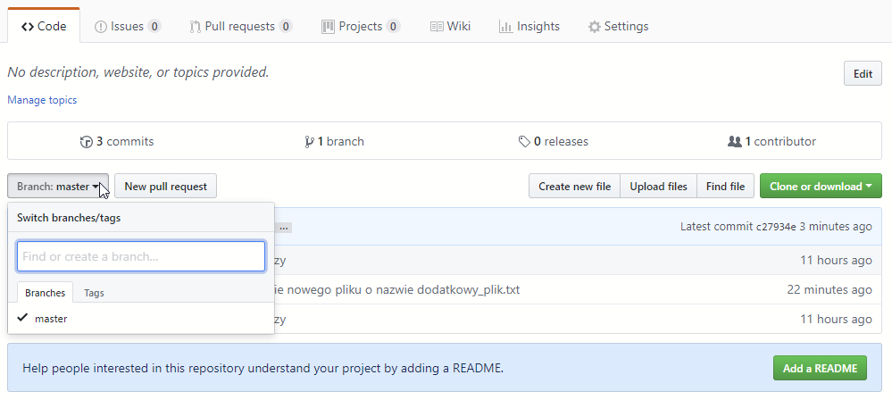